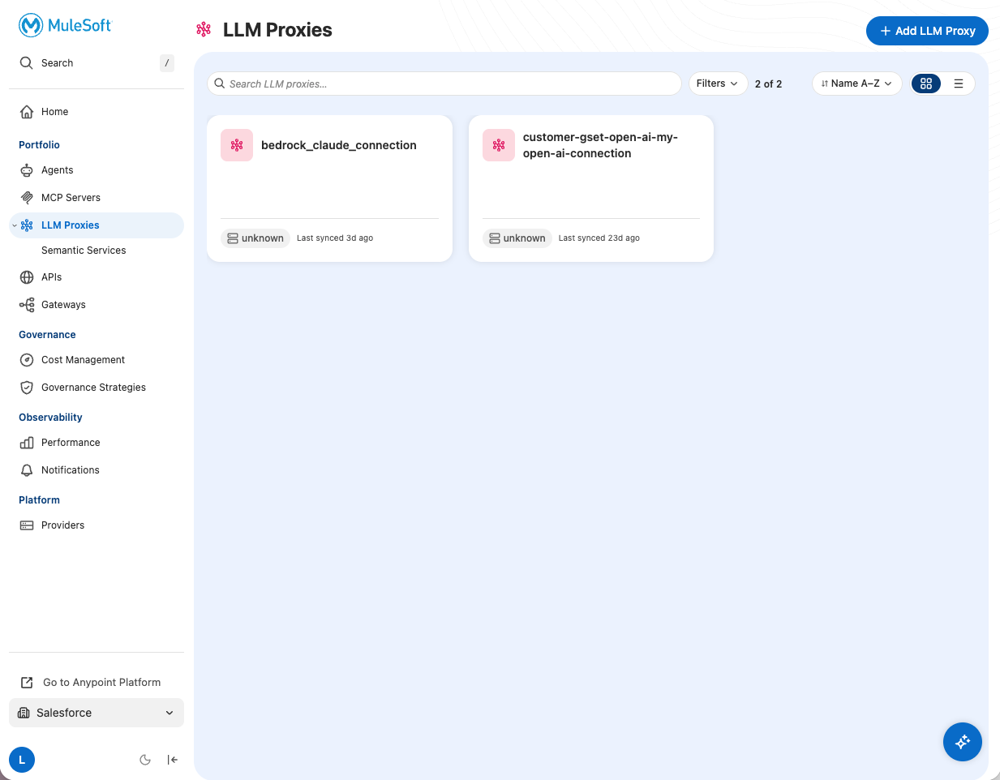
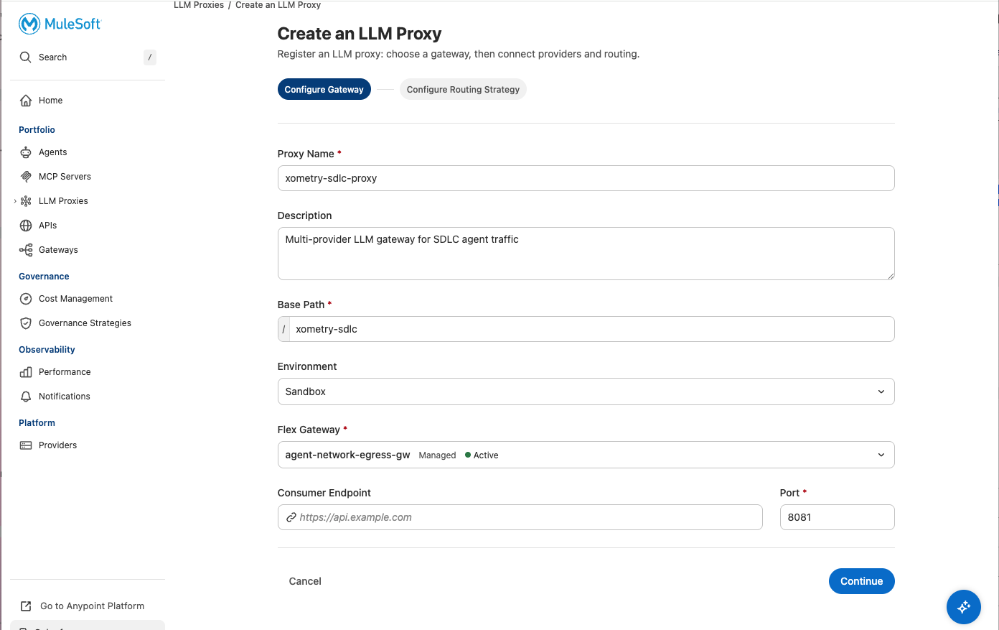
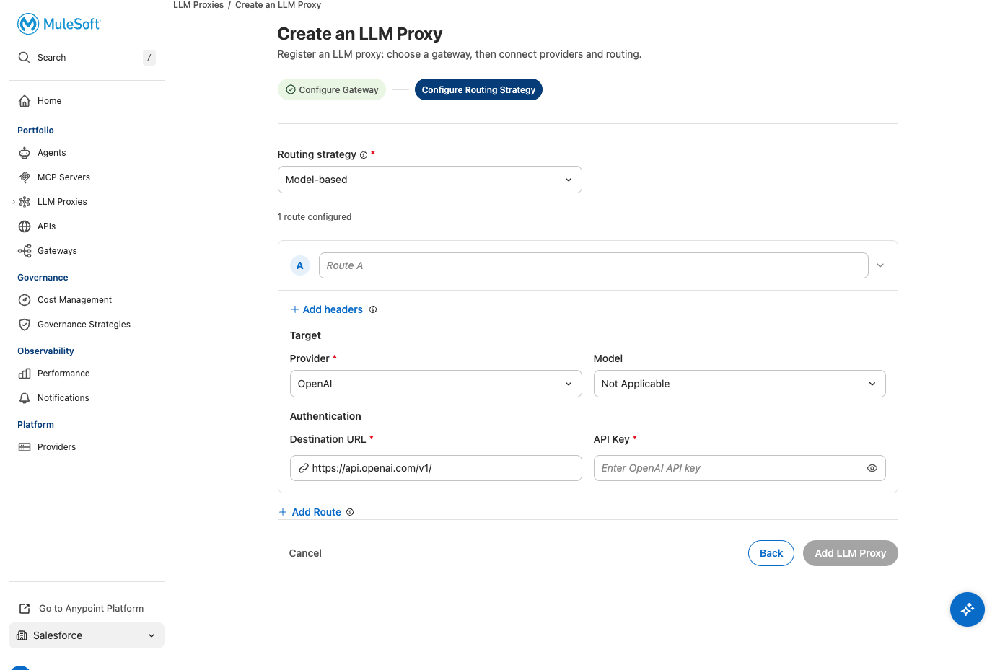
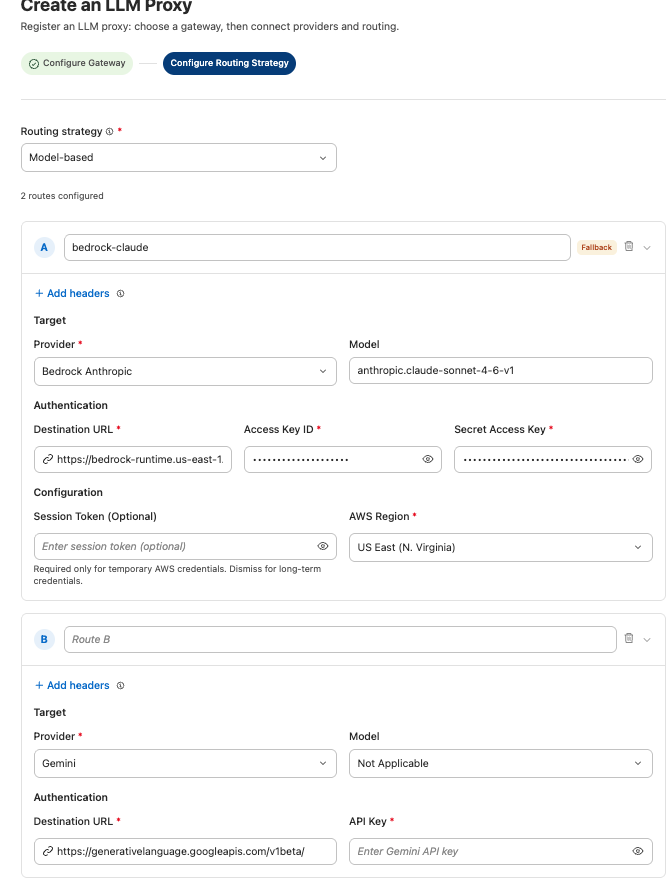
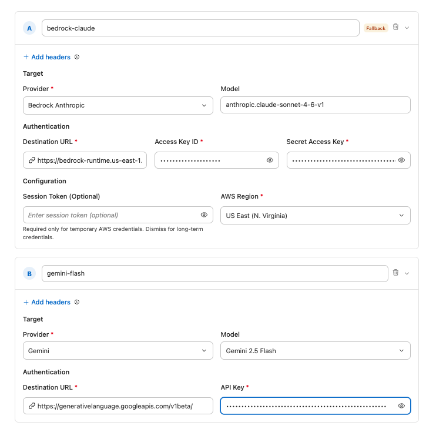
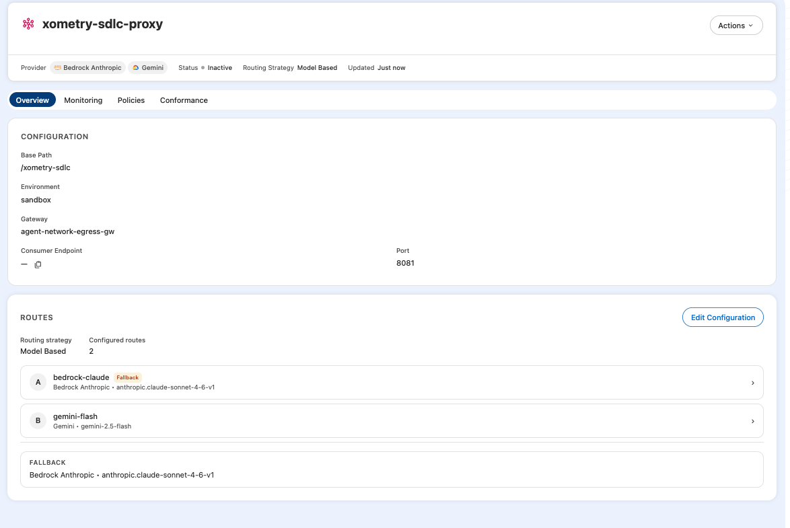
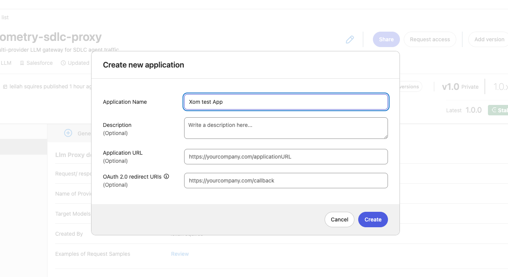
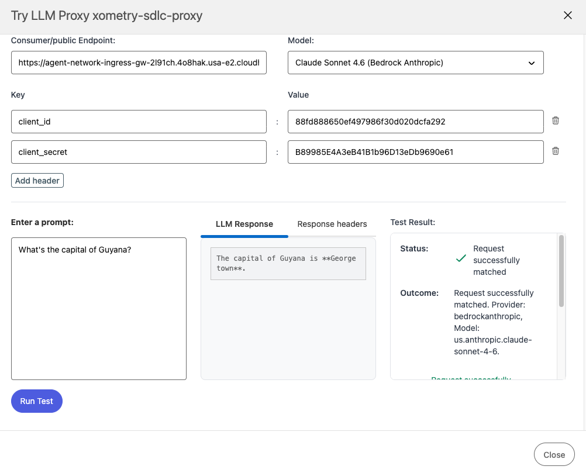

Lab 1: Create the LLM Proxy
Build a single AI gateway URL for your entire engineering org
Overview
In this lab you'll create an LLM Proxy that acts as a single AI gateway URL for your entire engineering org. Developers hit one endpoint — the proxy decides which model and provider to use.
Business scenario: Your 500-person engineering team is consuming $3M/year in LLM tokens across AWS Bedrock, with no visibility into who's spending what. You'll build a control plane that routes requests to the appropriate provider automatically.
Token spend went from $500K → $3M with no attribution. This lab creates the foundation for cost control, routing optimization, and per-team visibility.
Workshop Credentials
All credentials (Anypoint login, AWS Bedrock keys, Gemini API key, Hugging Face token) will be provided by your instructor at the start of the workshop.
Workshop uses Ingress. We deploy on the ingress gateway so participants can test immediately via the Playground and curl. In production, you'd deploy on the egress gateway (outbound traffic to LLM providers).
Step 1: Log into Anypoint Platform
- Go to anypoint.mulesoft.com
- Log in with your workshop credentials (provided by your instructor)
Step 2: Navigate to LLM Proxies
- In the left nav, click Agent Fabric → LLM Proxies
- Click + Add LLM Proxy

Step 3: Configure Gateway Settings
Fill in the basic proxy configuration:
| Field | Value |
|---|---|
| Proxy Name | xometry-sdlc-proxy |
| Description | Multi-provider LLM gateway for SDLC agent traffic |
| Base Path | /xometry-sdlc |
| Environment | Sandbox |
| Flex Gateway | agent-network-ingress-gw |
| Port | 8081 |

Click Continue to proceed to routing configuration.
Step 4: Configure Routing Strategy
- On the "Configure Routing Strategy" tab, select Model-based from the Routing Strategy dropdown
- You'll see a blank route ready to configure

Step 5: Add Route A — AWS Bedrock (Claude)
- Name the route:
bedrock-claude - Configure the target:
| Field | Value |
|---|---|
| Provider | Bedrock Anthropic |
| Model | us.anthropic.claude-sonnet-4-6 |
| Destination URL | (auto-populated) |
| Access Key ID | (provided by instructor) |
| Secret Access Key | (provided by instructor) |
| AWS Region | US East (N. Virginia) |

Step 6: Add Route B — Google Gemini (Flash)
- Click + Add Route
- Name the route:
gemini-flash - Configure the target:
| Field | Value |
|---|---|
| Provider | Gemini |
| Model | Gemini 3 Flash Preview |
| Destination URL | https://generativelanguage.googleapis.com/v1beta/ |
| API Key | (provided by instructor) |

Click Add LLM Proxy to create the proxy.
Step 7: Verify Proxy Created
You should see the proxy overview page showing:
- Status: Active
- Routing Strategy: Model Based
- 2 configured routes:
bedrock-claudeandgemini-flash

Step 8: Create a Client Application
To test the proxy, you need client credentials.
- Navigate to Exchange (top nav or "Go to Anypoint Platform")
- Search for
xometry-sdlc-proxy - Click into the asset
- Click Request access
- Select the LLM proxy version and click Create a new application
- Fill in the application details:
| Field | Value |
|---|---|
| Application Name | xometry-workshop-test |
| Description | Workshop test client |
- Click Create
- Important: Copy the Client ID and Client Secret — you'll need these to authenticate

Step 9: Test in Playground
- Go to API Manager (via "Go to Anypoint Platform")
- In the left nav under AI Management, click LLM Proxies
- Find and click into
xometry-sdlc-proxy - Click Try out (top right)
- Configure:
- Add headers:
client_idandclient_secretwith your values - Model: Select
Claude Sonnet 4.6 (Bedrock Anthropic)
- Add headers:
- Enter a test prompt:
What's the capital of Australia? - Click Run Test
- Status: "Request successfully matched"
- Outcome: "Provider: bedrockanthropic, Model: us.anthropic.claude-sonnet-4-6"
- Response with the answer

Lab 1 Complete
You now have:
- 1 LLM Proxy deployed on Flex Gateway (ingress)
- 2 provider routes (Bedrock Claude + Gemini Flash)
- 1 Client Application with credentials
- Verified connectivity via Playground
Developers hit one URL — the proxy handles which provider receives the call based on the model parameter.